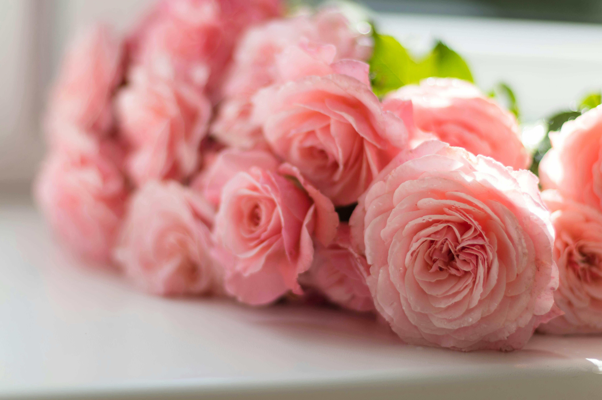

Where Can You Find Roses?
Roses are one of the most widely cultivated and beloved flowering plants, originating from a diverse range of environments across the Northern Hemisphere. They primarily grow in temperate regions, including areas of Europe, North America, and parts of Asia, where the climate supports their growth with cool winters and warm summers. Roses thrive in well-drained soils rich in organic matter, and they flourish in sunny locations where they receive at least six hours of direct sunlight each day. Today, roses are cultivated worldwide, from gardens and parks to farms and greenhouses, where they're bred for various purposes, including ornamental display, fragrance, and cut flowers.

The history of roses dates back millions of years, with fossil evidence showing that rose plants have existed for over 35 million years. Cultivation by humans began around 5,000 years ago, likely in ancient China and the Mediterranean, where roses were grown for their beauty and medicinal properties. Roses spread through trade routes, including the Silk Road, which connected Asia to the Middle East and Europe. By the 18th century, roses from China, known for their repeat-blooming traits, were introduced to Europe, leading to an explosion of breeding activity and the development of many of the modern varieties we know today.
Different rose species are adapted to various climates. For example, Rosa rugosa, known for its hardiness, can grow in cooler coastal climates and withstand harsh winter conditions, while Rosa chinensis, originating in warmer regions of Asia, thrives in more temperate climates and is the genetic basis for many garden hybrids. Today, horticulturalists and gardeners have expanded rose cultivation to include hybrids that can survive in diverse conditions, from hot, dry regions to cooler, rainier areas. The widespread appeal of roses has made them symbolic in various cultures, representing love, beauty, and even mystery. The diversity and adaptability of roses make them a versatile and cherished addition to gardens and landscapes around the world. Whether as climbing roses adorning walls, compact shrubs in flower beds, or as cultivated roses for florists, they continue to be celebrated for their elegance, fragrance, and colorful blooms.
What Are Roses Used For?
Roses are incredibly versatile and have been used by humans for thousands of years in ways that go far beyond ornamental purposes. Their uses span from culinary applications to cosmetics, medicine, and even spiritual practices. Each part of the rose—the petals, leaves, stems, and fruit (known as rose hips)—has its unique applications.

In the culinary world, rose petals and rose water are widely used, especially in Middle Eastern, Indian, and Mediterranean cuisines. Rose water, made by distilling rose petals, adds a delicate floral flavor to dishes, sweets, and drinks like Turkish delight, baklava, and lassi. In addition to rose water, rose petals can be candied and used as an elegant garnish for cakes and desserts. Rose hips, the fruit that forms after the flower blooms, are rich in vitamin C and are used to make jams, jellies, and herbal teas with a slightly tangy taste.
In cosmetics and skincare, roses are valued for their hydrating, anti-inflammatory, and soothing properties. Rose oil, extracted from petals through steam distillation, is a precious ingredient in perfumes, lotions, and creams. It’s known for its luxurious scent and is a common component in high-end perfumes. Rose water is also a popular skincare ingredient, acting as a gentle toner for balancing the skin’s pH and providing hydration. Many bath products, facial sprays, and essential oils include rose extracts for their calming fragrance and skin benefits.
Medicinally, roses have a history of use in traditional medicine. The petals and rose hips contain compounds with antioxidant, anti-inflammatory, and antimicrobial properties. Rose hips are especially beneficial due to their high vitamin C content, making them a popular supplement for boosting the immune system and maintaining skin health. They’re also used in herbal teas and tinctures that are thought to relieve inflammation and aid digestion. Roses also hold cultural and symbolic significance, making them prominent in ceremonial and spiritual contexts. They have long been associated with love, beauty, and purity, which is why they’re commonly featured in wedding bouquets, romantic gestures, and religious ceremonies. In ancient Rome, roses symbolized secrecy, leading to the phrase "sub rosa" (under the rose) to mean confidentiality. In spiritual practices, roses are often used to create oils and incense, which are believed to bring peace, love, and emotional balance. Overall, roses enrich various facets of human life, blending aesthetic appeal with practical uses in ways that few other plants can match. Their multifaceted benefits make roses not just a symbol of beauty but also a valuable resource across cultures and industries.
A Flower Poem
tell the flowers—they think the sun loves them. The grass is under the same simple-minded impression
about the rain, the fog, the dew. And when the wind blows, it feels so good they lose control of themselves
and swobtoggle wildly around, bumping accidentally into their slender neighbors. Forgetful little lotus-eaters,
solar-powered hydroholics, drawing nourishment up through stems into their thin green skin,
— from Application for Release from the Dream